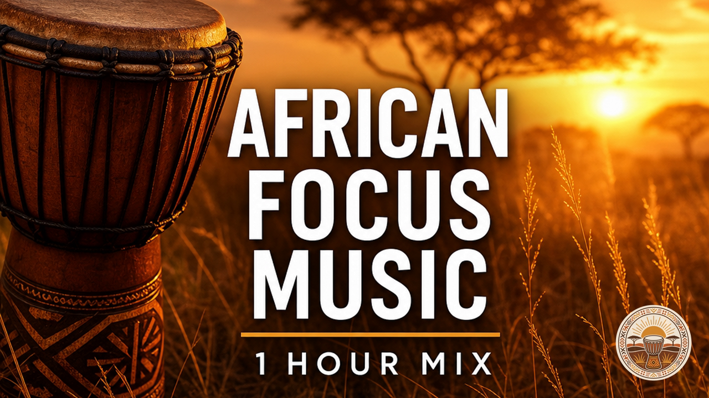

TWO versions of Mix 1 are rendered and staged on Drive: a 32-minute cut and a seamless-looped 60-minute cut (same curated afro-lofi bed - djembe open to warmth build to gentle close - over the original warm-savanna visual with the channel logo). Research below says ~1 hour is the primary length for this niche, so the 60-min is the recommended publish target and now makes thumbnail B ("1 HOUR MIX") accurate. Pick a version + thumbnail + title, run the 5-item monetization checklist, then upload.
1. 1 hour is the primary target. "1 hour" is the dominant search-demand length for focus/study music ("1 hour focus music", "1 hour lofi study" are high-volume); it covers a full deep-work block / Pomodoro cluster and is the workhorse format top afro-lofi channels (Kitoko Sound, African Lofi) ship most.
2. Monetization clears at 1 hr. Well past the 8-min mid-roll threshold (multiple mid-rolls enabled; mid-roll channels see ~50% more ad revenue), and every full listen banks ~1 watch-hour toward the 4,000h YPP bar - 60-min sessions accrue watch-hours far faster than 32-min.
3. Retention is background-listening, not start-to-finish. Listeners run these as ambient beds, so longer = more accumulated watch-time per session; ultra-long videos report 2.3-2.8x algorithm multipliers vs ~1.2x for short.
4. Cadence mix: weekly 1-hour mix as the staple (this is it) + an occasional 2-3 hour loop for the "all-day" search lane (cheap - just loop further) + keep the 32-min as a lighter single-session variant. Lofi Girl's 8-12h streams show the long tail exists, but 1h is the right opening bet.
5. Recommendation: publish the 60-min as Mix 1 (matches search demand + thumbnail B + monetization); keep the 32-min staged as the optional shorter cut; queue a 3-hour loop only once the 1-hr format shows traction. Sources: vidIQ/long-form strategy, TubeBuddy mid-roll 2025, YouTube YPP docs, Kitoko Sound / African Lofi channel patterns.

For the recommended 60-min version (use a 1-hour title):
If you publish the 32-min cut instead (use a 30-min title):
Warm Savanna is African-feel focus music for deep work, study, and calm. This is Mix 1 - 1 hour of warm, percussion-led afro lofi: djembe, talking drums, mellow keys, and golden-hour textures, arranged to keep you in flow without pulling your attention. Leave it on while you work, study, read, or wind down. Afro lofi . African lofi . afrobeats lofi . African focus music . deep work . study music. New focus mix every week. CHAPTERS 00:00 Djembe Dawn 03:14 Rhythm Rising 06:28 Butterfly Flight 09:42 Tribal Dreams 12:56 Golden Hour 16:10 Take Flight 19:24 Stand Strong 22:38 Soulful Roots 25:52 Embers 29:06 Gentle Close 32:20 Djembe Dawn (II) 35:34 Rhythm Rising (II) 38:48 Butterfly Flight (II) 42:02 Tribal Dreams (II) 45:16 Golden Hour (II) 48:30 Take Flight (II) 51:44 Stand Strong (II) 54:58 Soulful Roots (II) 58:12 Embers (II) All music is original, composed by Boubacar with AI assistance (Suno, commercial license) and arranged into this curated mix. Original branded visuals. This video contains altered or synthetic content (AI-assisted music), disclosed per YouTube policy. #afrolofi #africanlofi #afrobeatslofi #studymusic #focusmusic #deepwork #africanmusic #lofi
Warm Savanna is African-feel focus music for deep work, study, and calm. This is Mix 1 - 30 minutes of warm, percussion-led afro lofi: djembe, talking drums, mellow keys, and golden-hour textures, arranged to keep you in flow without pulling your attention. Leave it on while you work, study, read, or wind down. Afro lofi . African lofi . afrobeats lofi . African focus music . deep work . study music. New focus mix every week. CHAPTERS 00:00 Djembe Dawn 03:14 Rhythm Rising 06:28 Butterfly Flight 09:42 Tribal Dreams 12:56 Golden Hour 16:10 Take Flight 19:24 Stand Strong 22:38 Soulful Roots 25:52 Embers 29:06 Gentle Close All music is original, composed by Boubacar with AI assistance (Suno, commercial license) and arranged into this curated mix. Original branded visuals. This video contains altered or synthetic content (AI-assisted music), disclosed per YouTube policy. #afrolofi #africanlofi #afrobeatslofi #studymusic #focusmusic #deepwork #africanmusic #lofi
The #1 kill risk for AI music is YouTube's "inauthentic content" policy. The mix already carries all 4 human-layer elements; these are the toggles only you can flip:
Launch cadence: 1 mix/week. Rotate the 3 thumbnail variants for A/B until 5-10 uploads, then lock the winner. Weekly review: first-30s retention, CTR, total views.
Kill rule: if this channel costs more than 30 min of your time per week, kill it before scaling. Build is automated. Recurring human cost = ~5-min pre-publish checklist + weekly metrics glance.